Key Takeaways
- Keep Android Device Screens on While Charging is configured using the Microsoft Intune Settings Catalog.
- The setting allows administrators to keep Android device screens on while connected to AC, USB, or wireless power.
- Multiple charging modes can be selected based on organizational requirements.
- The setting is not actively enforced until the required charging modes are configured.
In this post we are discussing Keep Android Device Screens on While Charging for Continuous Visibility using Intune Policy. Android devices used in organizations are often connected to a power source for long periods, especially dedicated devices used for kiosks, digital displays, shared devices, or other business purposes. In these situations, allowing the screen to remain on while charging can help ensure that important information or applications remain visible.
Table of Contents
Keep Android Device Screens on While Charging for Continuous Visibility using Intune Policy
Administrators can choose different charging modes, including AC, USB, and Wireless, depending on their requirements. When the device is connected using one of the selected power sources, the screen will not turn off automatically. ‘AC’ keeps the screen on when the device is charging over an AC adapter. ‘USB’ keeps the screen on when the device is charging over USB. ‘Wireless’ keeps the screen on when the device is charging wirelessly
Create Profile
This new capability gives IT administrators more control over device power behavior through a centralized Intune configuration. By defining the appropriate power connection types, organizations Sign in to the Microsoft Intune admin center and navigate to Devices > Configuration.
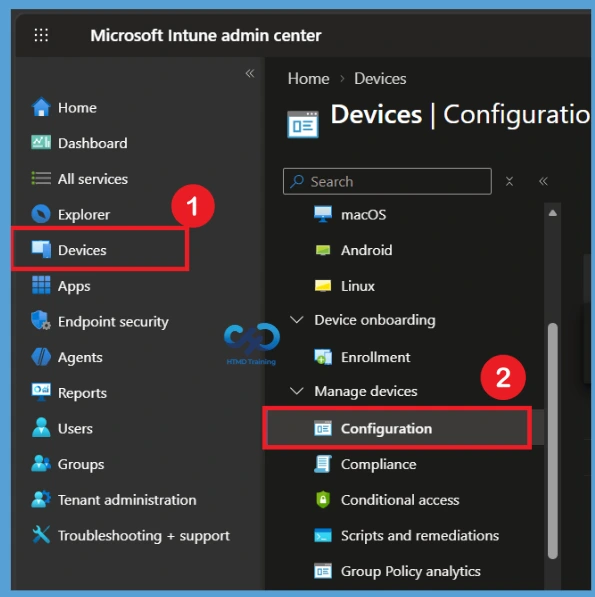
Select Create > New policy to begin creating the Keep Android Device Screens on While Charging policy. Choose Android Enterprise as the platform and select Settings catalog as the profile type. Then select Create to continue with the policy configuration.
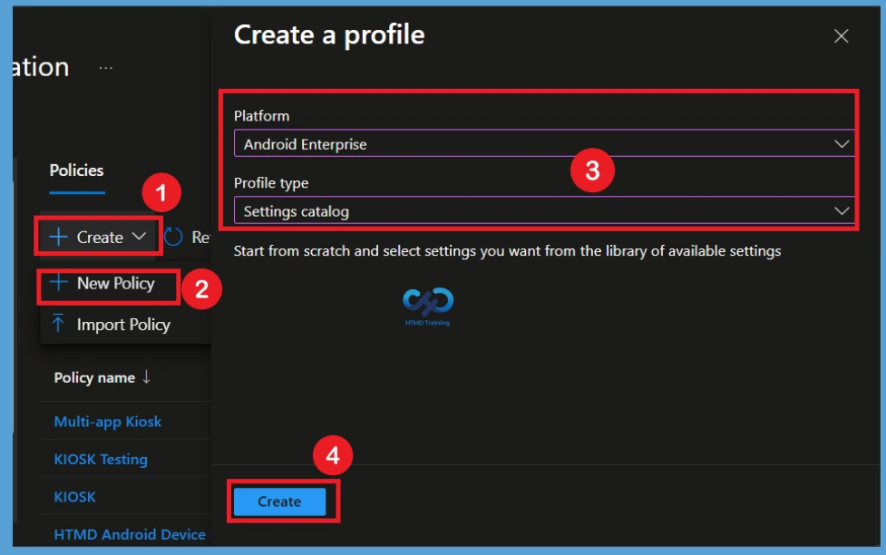
Basics Tab
In the Basics section, enter a meaningful name for the policy. For example, you can use Keep Android Device Screens on While Charging as the policy name. Add a short description explaining the purpose of the policy. This makes it easier for administrators to understand what the configuration does when managing multiple Intune policies. Select Next to continue.
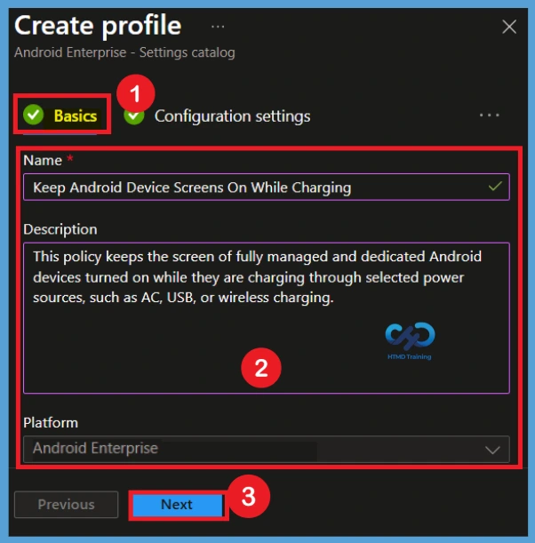
Configuration Step
n the Configuration settings section, select Add settings to open the Settings Picker. Search for Screen on while device plugged in to find the required setting. The setting is available under Device Restriction > Power. Select the setting and close the Settings Picker to add it to the Keep Android Device Screens on While Charging policy configuration.
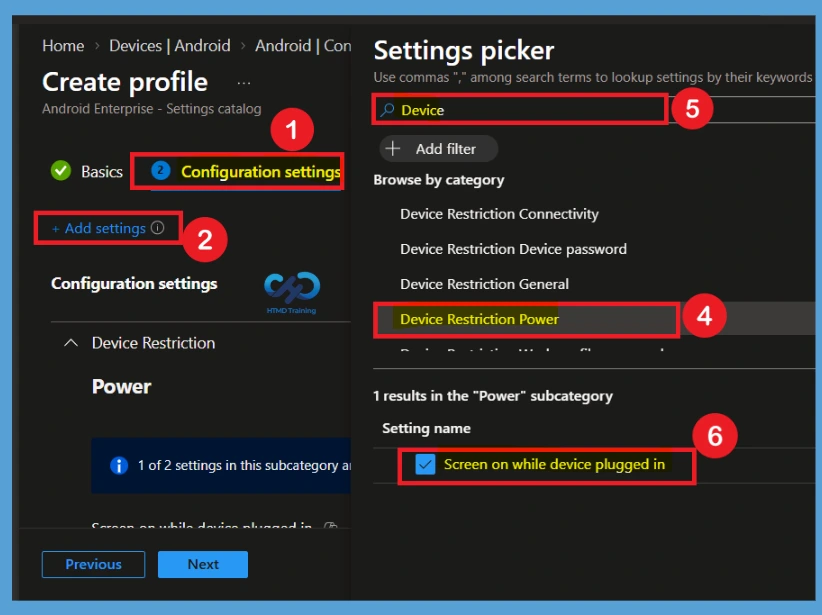
Configuration Settings Screen on while Device Plugged in
By default, the Screen on while device plugged in setting isn’t configured. This means Intune does not force the device screen to remain on while the device is charging. When the setting is left unconfigured, the Android device continues to use its existing screen timeout and power behavior. Administrators must explicitly configure the available charging modes when they want to keep the screen on.
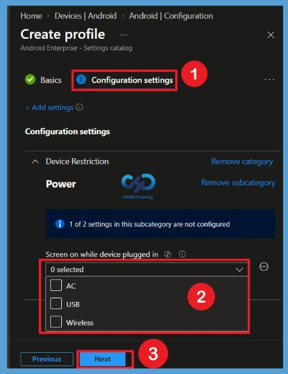
Enable the Keep Android Device Screens on While Charging Policy
To enable the policy, select the required charging modes under Screen on while device plugged in. The available options include AC, USB, and Wireless. You can select one or more charging modes depending on your organization’s requirements. For example, selecting AC keeps the screen on when the device is connected to AC power, while selecting USB or Wireless applies the behavior to those charging methods.
| Screen on while device plugged in Options | Info |
|---|---|
| AC | AC keeps the screen on when the device is charging over an AC adapter |
| USB | USB keeps the screen on when the device is charging over USB. |
| Wireless | Wireless keeps the screen on when the device is charging wirelessly. |
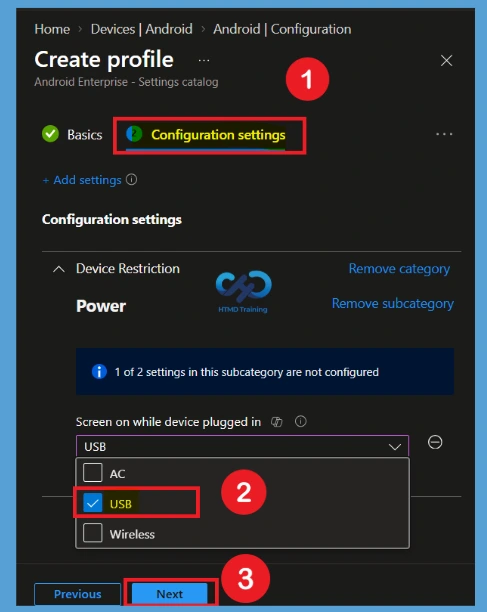
The Scope tags section allows administrators to control which Intune administrators can view and manage the Keep Android Device Screens. If your organization uses scope tags, select the appropriate tags for the policy. Otherwise, you can leave the default scope tag configuration and continue to the next step.
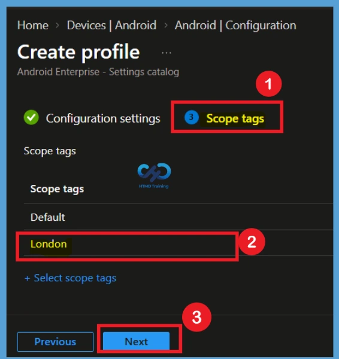
Assignment
The assignments section is used to choose the users or devices that will receive the policy. Add a group by clicking on the Add group button. Here, I selected the HTMD-Test Policy group and HTMD CPC Test group. Review the assignment settings to ensure the correct targets are included and click Next to proceed with the policy deployment
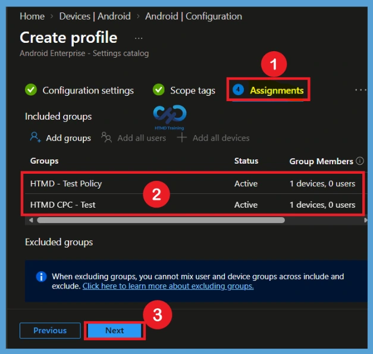
Review + Create
In the Review + create section, review all the policy settings, including the policy name, configuration settings, scope tags, and assignments. Once you confirm that everything is configured correctly, select Create. Intune will then create and deploy the Keep Android Device Screens on While Charging policy to the assigned groups.
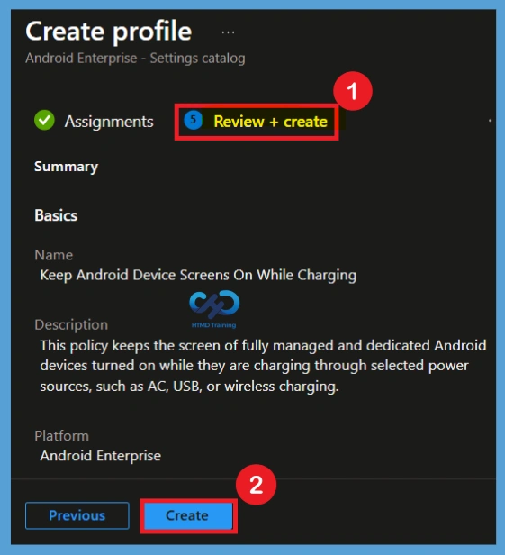
Monitoring Status
After the policy is deployed, open the Keep Android Device Screens on While Charging in the Intune admin center. Navigate to the monitoring section to check the deployment status. The monitoring information helps administrators identify whether the policy was successfully applied to targeted devices. You can also review devices that show errors or pending status and investigate them if necessary.
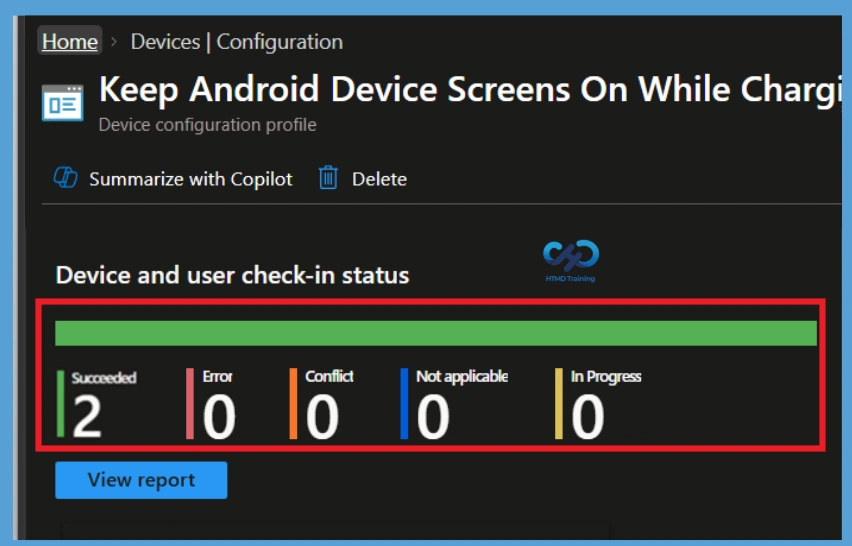
Remove Assigned Groups from Keep Android Device Screens On While Charging
If a group no longer requires this configuration, open the Keep Android Device Screens On While Charging policy and edit the Assignments section. Remove the group that should no longer receive the policy. After removing the group, review and save the changes. Devices in the removed group will no longer be targeted by the policy after Intune processes the updated assignment.
- To access the Edit profile page, go to Devices in the Intune admin center and search for the policy using its name. Select the required policy from the results, open its Properties, and choose Edit for the profile.
- From there, you can modify the group assignments, remove the required group, and save the changes.
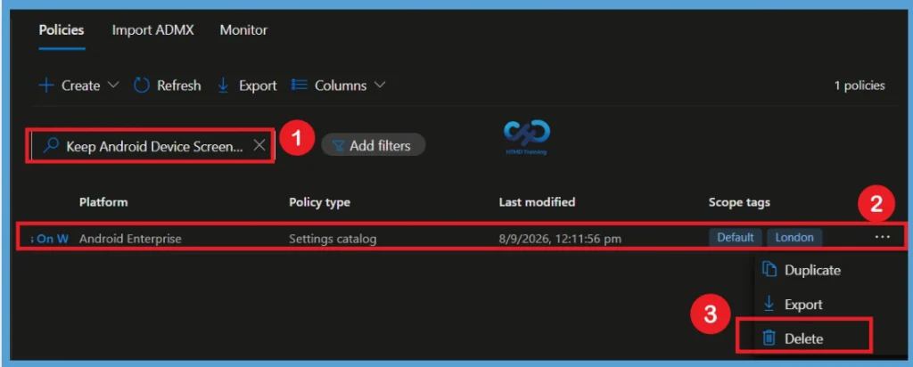
Delete the Keep Android Device Screens On While Charging
If the policy is no longer required, first make sure that you no longer need the configuration or its assignments. Open the Keep Android Device Screens on While Charging policy from the Intune configuration policies list. Select Delete and confirm the deletion. This permanently removes the policy from Intune, so the policy can no longer be managed or deployed to devices.
- Once you open the policy, locate the 3-dot menu, also known as More options, and click it. From the available options, select Delete and confirm the deletion when prompted.
- The policy will then be permanently removed from your Intune tenant.
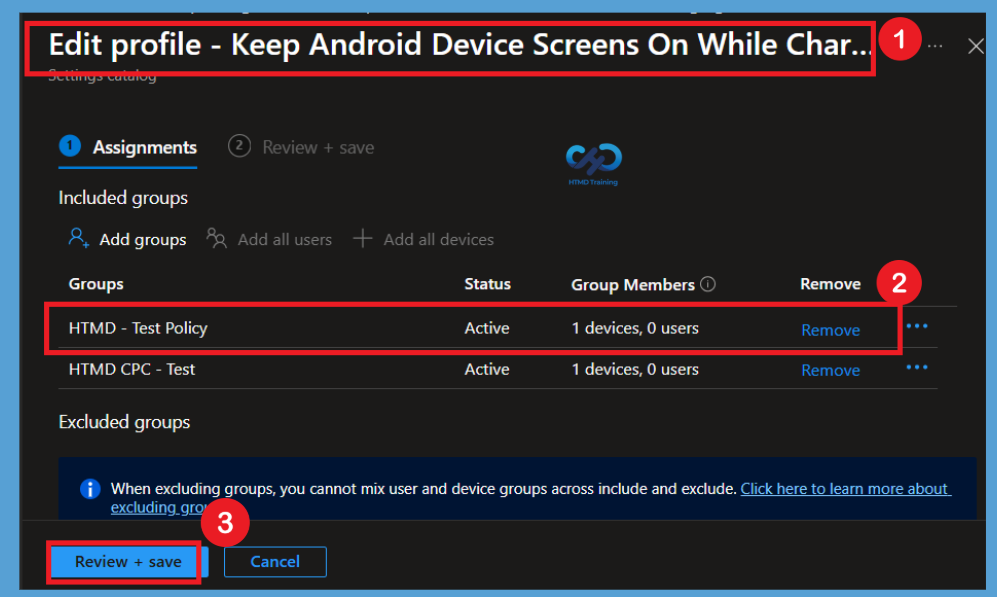
Need Further Assistance or Have Technical Questions?
Join the LinkedIn Page and Telegram group to get the latest step-by-step guides and news updates. Join our Meetup Page to participate in User group meetings. Also, Join the WhatsApp Community and WhatsApp Channel to get the latest news on Microsoft Technologies. We are there on Reddit as well.
Author
Anoop C Nair is Workplace Technology solution architect with 25+ years of experience in global enterprise organizations such as JP Morgan, Capgemini, etc. He is Microsoft Certified Trainer. Microsoft MVP from 2015 onwards for consecutive 11 years! He also conducts Intune and modern workplace tech training for enterprise organizations. He is Blogger, Speaker, and Founder of HTMD Community and HTMD Conference. His focus is on Device Management technologies such as Intune, Windows, Cloud PC. He writes about technologies like Intune, SCCM, Windows, Cloud PC, Windows, Entra, Microsoft Security.